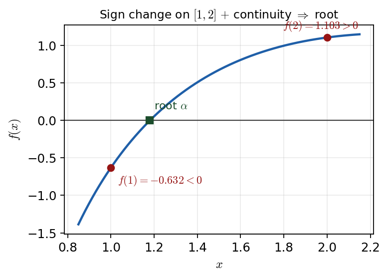

Harry → Phuc • 11 July 2026 tutorial
P3 WMA13/01 — Oct 2025 — Q2Q2 · Roots, the Intermediate Value Theorem and an iteration

\(f(1)=-0.632<0\) and \(f(2)=1.103>0\): a sign change on a continuous \([1,2]\) forces a root \(\alpha\).
Part (a) · Root in \([1,2]\) (IVT)[2] · reviewed in lesson
Hide workingStrategy
Evaluate \(f\) at the two
endpoints, show one value is positive and one negative (a sign change), then invoke continuity.
Substitute the endpoints
\[ f(1)=\frac{2+3-4}{e}-1=\frac{1}{e}-1=-0.632\ldots<0, \]\[ f(2)=\frac{8+6-4}{e^{2}}-\frac{1}{4}=\frac{10}{e^{2}}-0.25=1.103\ldots>0. \]
Result · conclude with both conditions
\(f\) is
continuous on \([1,2]\) (defined for all \(x\) there, \(x\neq0\) causes no problem), and \(f\) changes sign, so by the Intermediate Value Theorem there is a root \(\alpha\in[1,2]\).
Sense check
Both values are read straight off the curve in Figure 1: below the axis at \(x=1\), above it at \(x=2\).
Phuc's slip (recorded) — the mark-loser: Phuc gave the sign-change idea but stopped there, and also picked values "near" the ends (\(1.111,\ 1.999\)). Harry: "you can just use the endpoints… the bit that everyone forgets is to mention that continuity. You must, must remember sign change and continuity. Otherwise you'll only score one mark."
Part (b) · Rearrange to the cube-root form[2] · completed with prompting
Carry-inStart from \(f(x)=0\): \(\dfrac{2x^{2}+3x-4}{e^{x}}-\dfrac{1}{x^{2}}=0\). Target form to aim at: \(x=\sqrt[3]{\dfrac{e^{x}+4x^{2}}{2x+3}}\).
Hide workingStrategy (Harry’s cue)
Read the
target for clues: a cube root means "cube-root both sides", and the \(2x+3\) in the denominator means "factor \(x^{3}(2x+3)\) out of the left side".
Working · clear denominators
\[ \frac{2x^{2}+3x-4}{e^{x}}=\frac{1}{x^{2}} \;\Rightarrow\; x^{2}\bigl(2x^{2}+3x-4\bigr)=e^{x} \;\Rightarrow\; 2x^{4}+3x^{3}-4x^{2}=e^{x}. \]
Working · collect and factor
\[ 2x^{4}+3x^{3}=e^{x}+4x^{2} \;\Rightarrow\; x^{3}\bigl(2x+3\bigr)=e^{x}+4x^{2}. \]
Result · cube-root both sides
\[ x^{3}=\frac{e^{x}+4x^{2}}{2x+3} \;\Rightarrow\; x=\sqrt[3]{\frac{e^{x}+4x^{2}}{2x+3}}. \]
Target form reached, as required.
Sense check
Every original term is accounted for: the \(4x^{2}\) moved right, and \(2x^{4}+3x^{3}=x^{3}(2x+3)\) matches the required denominator.
Status — transcript/ledger conflict: On the primary spoken transcript this rearrangement was completed with Harry's prompting: after factoring to \(2x+3\), Harry says "well done, and then we're there, aren't we?". The separate video-evidence ledger instead labels part (b) only partial. This is a source-status conflict, not evidence that (b) was left unfinished; the deck marks (b) completed with prompting. Phuc's recorded difficulty was multiplying out and getting stuck before spotting the factorisation.
Part (c) · Iteration for \(x_{3}\) and \(\alpha\)[3] · deferred (not reached)
Carry-inIteration: \(x_{n+1}=\sqrt[3]{\dfrac{e^{x_{n}}+4x_{n}^{2}}{2x_{n}+3}}\), \(x_{1}=1\); report \(x_{3}\) and \(\alpha\) each to 4 d.p.
Deferred — explicitly skipped in this session. Harry: "we'll leave that one, and maybe you can prove it to me, and send me an answer afterwards." The iteration was not started on the recording, so no tutor working is reconstructed. When you complete it independently: keep the calculator unrounded between iterates, apply the formula from \(x_{1}=1\), and quote \(x_{3}\) and the converged \(\alpha\) to 4 decimal places (the command asks for 4 d.p.).